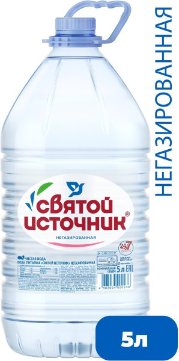

| Главная Каталог Контакты | ||||||||||
|---|---|---|---|---|---|---|---|---|---|---|
Вода питьевая Святой Источник негазированная, ПЭТ, 5 лОписание товараПитьевая вода |
||||||||||
|
||||||||||
Подробное описание товара«Святой Источник» — это природная питьевая вода, которая добывается из артезианских скважин, расположенных в заповедных местах российской природы. Тщательный подход к выбору источников позволяет использовать щадящие современные методы фильтрации, которые не меняют природную структуру воды. Это позволяет сберечь в воде «Святой Источник» оптимальное содержание солей и микроэлементов, сохраняя всю пользу для человека. |
||||||||||